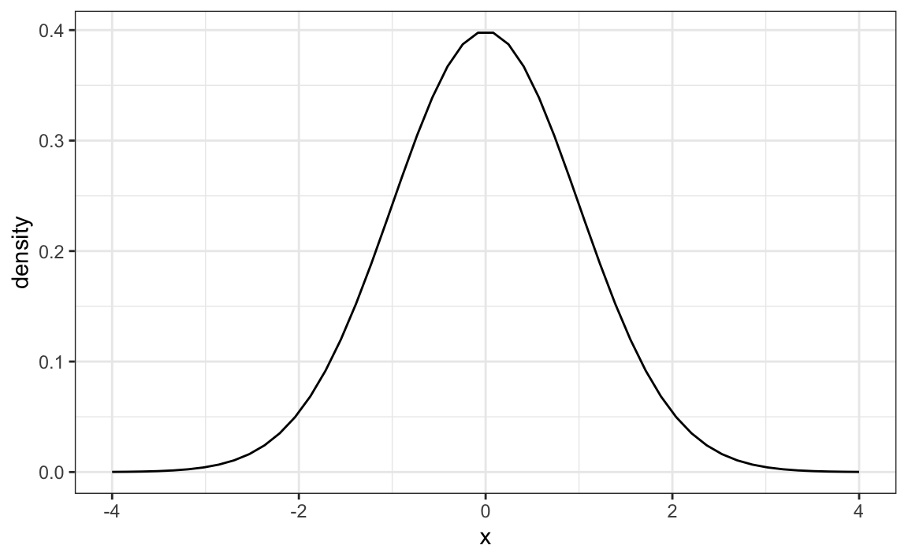
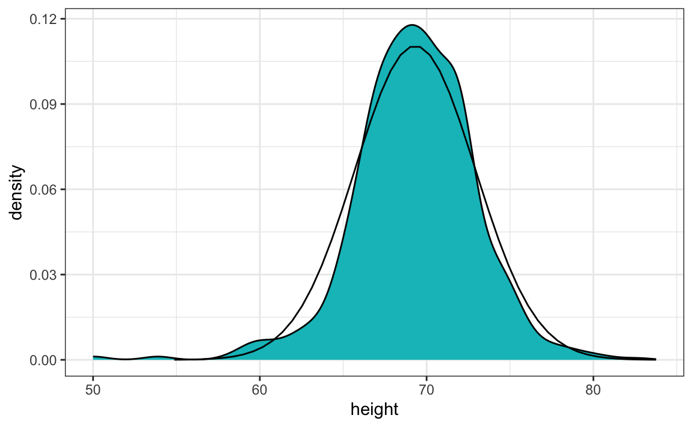
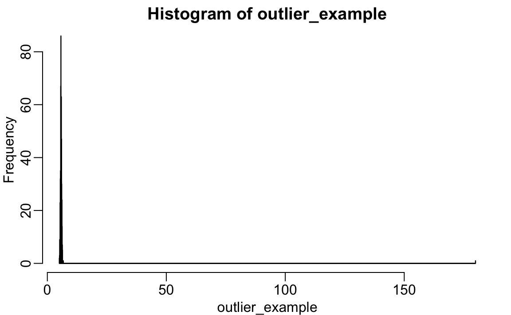
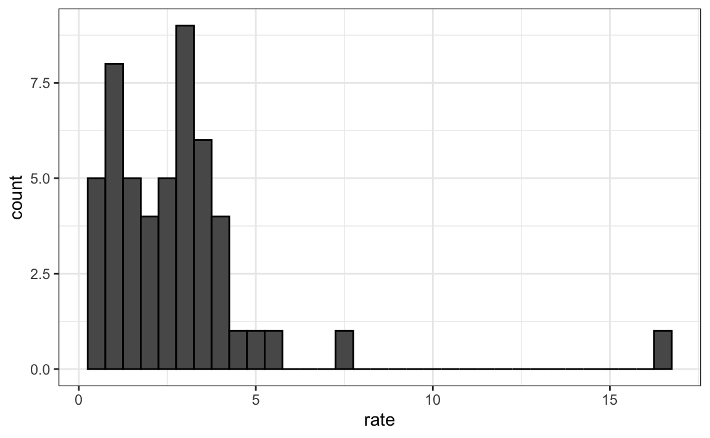
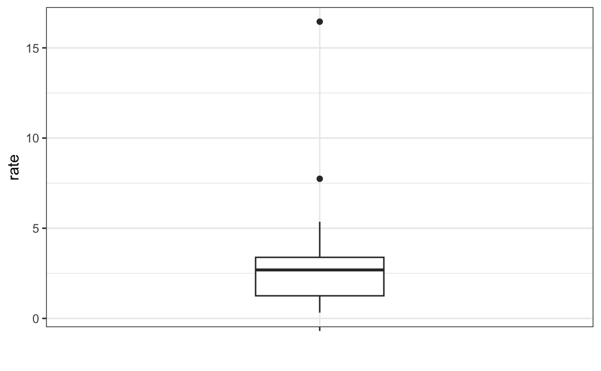

pnorm(a, mu, sigma)2 Numerical Summaries
Histograms and density plots provide excellent summaries of a distribution. But can we summarize even further? We often see the average and standard deviation used as summary statistics: a two-number summary! To understand what these summaries are and why they are so widely used, we need to understand the normal distribution.
2.1 The normal distribution
The normal distribution, also known as the bell curve and as the Gaussian distribution, is one of the most famous mathematical concepts in history. One reason for this is that approximately normal distributions occur in many situations, including gambling winnings, heights, weights, blood pressure, standardized test scores, and experimental measurement errors. There are explanations for these occurrences, which we will describe later. Here we focus on how the normal distribution helps us summarize data.
Rather than using data, the normal distribution is defined with a mathematical formula. For any interval \((a,b)\), the proportion of values in that interval can be computed using this formula:
\[\mathrm{Pr}(a < x \leq b) = \int_a^b \frac{1}{\sqrt{2\pi}\sigma} e^{-\frac{1}{2}\left( \frac{x-\mu}{\sigma} \right)^2} \, dx\]
But you don’t need to memorize the formula to use the normal distribution in practics. The most important characterstics is that it is completely defined by just two parameters: \(\mu\) and \(\sigma\). The rest of the symbols in the formula represent the interval ends, \(a\) and \(b\), and known mathematical constants \(\pi\) and \(e\). These two parameters, \(\mu\) and \(\sigma\), are referred to as the mean and the standard deviation (SD) of the distribution, respectively (and are the Greek letters for \(m\) and \(s\)). In R the fucntion pnorm let’s us compute the \(\mathrm{Pr}(x \leq a)\) for any \(a,\mu,\) and \(\sigma\):
The distribution is symmetric, centered at \(\mu\), and most values (about 95%) are within \(2\sigma\) from \(\mu\). Here is what the normal distribution looks like when the \(\mu = 0\) and \(\sigma = 1\):

The fact that the distribution is defined by just two parameters implies that if a dataset’s distribution is approximated by the normal distribution, all the information needed to describe the distribution can be encoded in just two numbers: the mean and the standard deviation.
2.2 The average and standard deviation
Discrete distributions also have means and standard deviations. We will discuss these terms in more detail in Chapter 7. For a list of values \(x_1, \dots, x_n\) the mean, call it \(\mu_x\) is defined by
\[ \mu_x = \frac{1}{n}\sum_{i=1}^n x_i \] Note that this equivalent to the average of the \(x\)s.
The standard deviation is defined with
\[ \sigma_x = \sqrt{\frac{1}{n}\sum_{i=1}^n (x_i - \mu_x)^2} \] which can be thought of as the average distance of the points \(x_i\) to the mean \(\mu_x\).
Let’s compute the mean and stardard deviations for the height for males:
The pre-built functions mean and sd can be used here:
For reasons explained in Section 11.2.1, sd(x) divides by length(x)-1 rather than length(x). But note that when length(x) is large, sd(x) and sqrt(sum((x-mu)^2)/length(x)) are practically equal.
If the distribution of the values stored in x is well approximated by a normal distribution, it makes sense to use the normal distribution with mean m <- mean(x) and standard deviation s <- sd(x). This means that the entire distribution of x can be summarized with just these two numbers!
The plot below shows the smooth density of the observed data (blue) and the corresponding normal approximation (black line) with mean = 69.3 and SD = 3.6:

The normal distribution appears to be a good approximation. For example, the probabilities computed using pnorm closely match those estimated directly from the data.
This shows the probability of being shorter than the average student:
And this shows the probability of being within two standard deviations of the mean:
When using the normal approximation with discrete data (for example, when heights are rounded to the nearest inch), note that mean(x < a) and mean(x <= a) may differ. In such cases, it’s common to apply a continuity correction, using pnorm(a + delta/2, m, s) to approximate mean(x <= a), where delta is the bin width (in our example, 1 inch). In our dataset, however, some students reported more precise measurements, so the degree of discretization varies. As a result, the normal approximation should be applied with care.
2.3 Standard units
For data that is approximately normally distributed, it is convenient to think in terms of standard units. The standard unit of a value tells us how many standard deviations away from the average it is. Specifically, for a value x from a vector x, we define the value of x in standard units as z = (x - m)/s with m and s the average and standard deviation of x, respectively. Why is this convenient?
First, revisit the formula for the normal distribution and observe that what is being exponentiated is \(-z^2/2\) with \(z\) equivalent to \(x\) in standard units. Because the maximum of \(e^{-z^2/2}\) is at \(z = 0\), this explains why the maximum of the distribution occurs at the mean. It also explains the symmetry since \(- z^2/2\) is symmetric around 0. Second, note that by converting the normally distributed data to standard units, we can quickly ascertain whether, for example, a person is about average (\(z = 0\)), one of the tallest (\(z \approx 2\)), one of the shortest (\(z \approx -2\)), or an extremely rare occurrence (\(z > 3\) or \(z < -3\)). Remember that it does not matter what the original units are, these rules apply to any data that is approximately normal.
In R, we can transform to standard units using the function scale:
z <- scale(x)To see how many males are within 2 SDs from the average, we simply type:
The proportion is about 95%, which is what the normal distribution predicts!
2.4 Robust summaries
Note that the heights we explored in the Chapter 1 are not the original heights reported by students. A second challenge involves exploring the original reported heights, which are also included in the dslabs package in the reported_heights object. We will see that due to errors in reporting, using robust summaries are necessary to produce useful summaries.
Outliers
Outliers are very common in real-world data analysis. Data recording can be complex and it is common to observe data points generated in error. For example, an old monitoring device may read out nonsensical measurements before completely failing. Human error is also a source of outliers, in particular when data entry is done manually. For example, an individual may mistakenly enter their height in centimeters instead of inches or put the decimal in the wrong place.
How do we distinguish an outlier from measurements that were too big or too small simply due to expected variability? This is not always an easy question to answer, but we try to provide some guidance. Let’s begin with a simple case.
Suppose a colleague is charged with collecting demography data for a group of males. The data report height in feet and are stored in the object:
Our colleague uses the fact that heights are usually well approximated by a normal distribution and summarizes the data with average and standard deviation:
mean(outlier_example)
#> [1] 6.1Our colleage writes a report on the interesting fact that this group of males is much taller than usual. The average height is over six feet tall! However, using your data analysis skills you notice something else that is unexpected: the standard deviation is over 7 feet.
sd(outlier_example)
#> [1] 7.8Adding and subtracting two standard deviations, you note that 95% of this population will have heights between -9.49, 21.7 feet, which does not make sense. A quick plot reveals the problem:
boxplot(outlier_example)
There appears to be at least one value that is nonsensical, since we know that a height of 180 feet is impossible. The boxplot detects this point as an outlier.
The Median
Outliers can make the average arbitrarily large. With 500 data points, increasing a single observation by \(\Delta \times\) 500 raises the average by \(\Delta\). In contrast, the median is robust to outliers: no matter how extreme one value becomes, the median remains unchanged as long as it does not cross the middle of the data.
The median of our example data is:
median(outlier_example)
#> [1] 5.74which corresponds to about 5 feet and 9 inches. The median is often a better measure of typical value when the data contain outliers.
Median Absolute Deviation
Just as outliers can distort the average, they can also make the standard deviation misleadingly large. A more robust measure of spread is the median absolute deviation (MAD).
To compute the MAD, we first find the median, then calculate the absolute deviation of each value from the median, and finally take the median of those deviations. To make it comparable to the standard deviation when data are normally distributed, we multiply this value by 1.4826. (The mad function in R applies this correction automatically.)
For our height data, the MAD is:
mad(outlier_example)
#> [1] 0.237which corresponds to about 3 inches.
The MAD provides a more stable estimate of variability when data include outliers. In such cases, it offers a truer sense of the dataset’s typical spread.
The Interquartile Range (IQR)
When data contain outliers or do not follow a normal distribution, the interquartile range (IQR) provides another way to summarize spread that is more robust than the standard deviation. The IQR represents the range that contains the middle 50% of the data, spanning from the 25th percentile (first quartile) to the 75th percentile (third quartile), and always includes the median.
Like the median and MAD, the IQR is resistant to extreme values: no matter how large or small an outlier becomes, the IQR remains largely unaffected. For normally distributed data, dividing the IQR by 1.349 gives an estimate of the standard deviation we would expect if no outliers were present.
In our example, this approximation works well. The IQR-based estimate of the standard deviation is:
IQR(outlier_example)/1.349
#> [1] 0.245which corresponds to about 3 inches.
In addition to summarizing spread, the IQR allows us to formally define what we mean by an outlier, a concept we will introduce in the next section.
A Data-Driven Definition of Outliers
A precise, data-driven definition of an outlier was introduced by John Tukey, who also developed the boxplot, a visualization we will introduce in the next section. To construct a boxplot, we first need a formal way to identify which data points count as outliers.
Let the first and third quartiles be denoted as \(Q_1 = Q(0.25)\) and \(Q_3 = Q(0.75)\), respectively. Tukey defined an observation as an outlier if it falls outside the following range:
\[ [Q_1 - 1.5 \times \text{IQR}, ; Q_3 + 1.5 \times \text{IQR}], \quad \text{where } \text{IQR} = Q_3 - Q_1 \]
When the data follow a standard normal distribution, this range is:
Using pnorm, we can compute the proportion of data expected to fall within this range:
Thus, about 99.302% of the data lie inside this interval for a normal distribution. In other words, we expect roughly 7 out of every 1,000 observations from a perfectly normal dataset to fall outside this range, not because they are erroneous, but simply due to random variation.
To make the definition stricter, Tukey proposed using a wider multiplier, such as 3 instead of 1.5, to flag far-out outliers. For normally distributed data, the range
captures about 99.9998% of all values, meaning that only about two in a million observations would fall outside it. In ggplot geom_boxplot() function, this multiplier is controlled by the coef argument, which defaults to 1.5.
Let’s apply Tukey’s rule to our height data. The extreme 180-foot measurement is well beyond the range defined by \(Q_3 + 3 \times \text{IQR}\):
If we remove this value, the remaining data follow an approximately normal distribution, as expected:
This demonstrates the usefulness of Tukey’s approach: it provides an objective, reproducible way to detect unusual observations—one that adapts to the spread of the data itself.
2.5 Boxplots
To introduce boxplots, we will use a dataset of U.S. murders by state. Suppose we want to summarize the distribution of murder rates. A histogram quickly reveals that the data are right-skewed, indicating that the normal approximation does not apply:

While a histogram provides valuable detail, people often prefer a more concise numerical summary, one that highlights the main features of the distribution without showing every data point.
The boxplot offers such a summary. It condenses a dataset into five numbers: the minimum, first quartile (\(Q_1\)), median (\(Q_2\)), third quartile (\(Q_3\)), and maximum. Outliers, values that fall outside Tukey’s range, defined in the previous section, are not included in the computation of the range, but are instead plotted as individual points.
Here’s the boxplot for the murder rate data:

The box spans from \(Q_1\) to \(Q_3\), with a horizontal line marking the median. The whiskers extend to the smallest and largest observations that are not outliers, while outliers are shown as separate points. The height of the box corresponds to the IQR, representing the middle 50% of the data.
Boxplots are especially useful when comparing distributions across groups, for example, comparing murder rates across regions or male and female height distributions. They provide a quick visual summary of differences in center, spread, and the presence of outliers. In the next chapter, we will use boxplots in exactly this way to compare distributions between groups.
2.6 Exercises
1. Load the height dataset and create a vector x with just the male heights:
library(dslabs)
x <- heights$height[heights$sex=="Male"]What proportion of the data is between 69 and 72 inches (taller than 69, but shorter or equal to 72)? Hint: use a logical operator and mean.
2. Suppose all you know about the data is the average and the standard deviation. Use the normal approximation to estimate the proportion you just calculated. Hint: start by computing the average and standard deviation. Then use the pnorm function to predict the proportions.
3. Notice that the approximation calculated in question 1 is very close to the exact calculation in question 2. Now perform the same task for more extreme values. Compare the exact calculation and the normal approximation for the interval (79,81]. How many times larger is the actual proportion than the approximation?
4. Approximate the distribution of adult men in the world as normally distributed with an average of 69 inches and a standard deviation of 3 inches. Using this approximation, estimate the proportion of adult men that are 7 feet tall or taller, referred to as seven-footers. Hint: use the pnorm function.
5. There are about 1 billion men between the ages of 18 and 40 in the world. Use your answer to the previous question to estimate how many of these men (18-40 year olds) are seven feet tall or taller in the world?
6. There are about 10 National Basketball Association (NBA) players that are 7 feet tall or higher. Using the answer to the previous two questions, what proportion of the world’s 18-to-40-year-old seven-footers are in the NBA?
7. Repeat the calculations performed in the previous question for Lebron James’ height: 6 feet 8 inches. There are about 150 players that are at least that tall.
8. In answering the previous questions, we found that it is not uncommon for a seven-footer to become an NBA player. What would be a fair critique of our calculations:
- Practice and talent are what make a great basketball player, not height.
- The normal approximation is not appropriate for heights.
- The normal approximation tends to underestimate the extreme values. It’s possible that there are more seven-footers than we predicted.
- The normal approximation tends to overestimate the extreme values. It’s possible that there are fewer seven-footers than we predicted.
We are going to use the HistData package. Load the Galton data and create a vector x, consisting solely of the child heights:
9. Compute the average and SD of these data.
10. Compute the median and median absolute deviation of these data.
11. Now suppose Galton made a mistake when entering the first value and forgot to use the decimal point. You can imitate this error by typing:
x_with_error <- x
x_with_error[1] <- x_with_error[1]*10How many inches does the average grow after this mistake?
12. How many inches does the SD grow after this mistake?
13. How many inches does the median grow after this mistake?
14. How many inches does the MAD grow after this mistake?
15. How could you use exploratory data analysis to detect that an error was made?
- Since it is only one value out of many, we will not be able to detect this.
- We would see an obvious shift in the distribution.
- A boxplot, histogram, or qqplot would reveal a clear outlier.
- A scatterplot would show high levels of measurement error.
16. How much can the average accidentally grow with mistakes like this? Write a function called error_avg that takes a value k and returns the average of the vector x after the first entry changed to k. Show the results for k=10000 and k=-10000.
17. Using the murders dataset in the dslabs package. Compute the murder rate for each state. Make a boxplot comparing the murder rates for each region of the United States.
18. For the same dataset, compute the median and IQR murder rate for each region.
19. The heights we have been looking at in the heights data frame are not the original heights reported by students. The original reported heights are also included in the dslabs package in the object reported_heights. Note that the height column in this data frame is a character, and if we try to create a new column with the numeric version:
library(tidyverse)
reported_heights <- reported_heights |>
mutate(original_heights = height, height = as.numeric(height))we get a warnings about NAs. Examine the rows that result in NAs and describe why this is happening.
20. Add a column to the reported_heights with the year the height was entered. You can use the year function in the lubridate package to extract the year from reported_heights$time_stamp. Change the height column from characters to numbers using as.numeric. Some of the heights will be converted to NA because they were incorrectly entered and include characters, for example 165cm. These heights were supposed to be reported in inches, but many clearly did not. Convert any entry with highly unlikely heights, below 54 or above 72, to NA using the na_if function from dplyr. Once you do this, stratify by sex and year and report the percentage of incorrectly entered heights, represented by the NA.
21. Remove the entries that result in NAs when attempting to convert heights to numbers. Compute the mean, standard deviation, median, and MAD by sex. What do you notice?
22. Generate boxplots summarizing the heights for males and females and describe what you see.
23. Look at the largest 10 heights and provide a hypothesis for what you think is happening.
24. Review all the nonsensical answers by looking at the data considered to be far out by Tukey and comment on the type of errors you see.